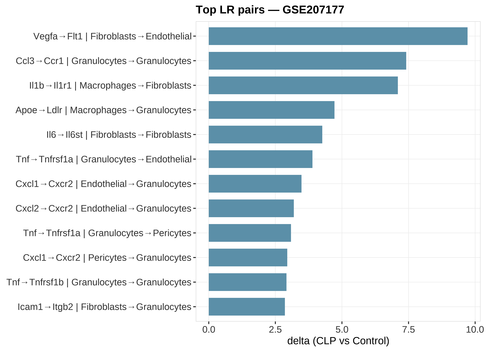

状态：PASS
sourced: 运行骨架_runSkeleton.R
data_provenance: REAL — GSE207177 real_GSE207177_Top_LR_pairs.csv（书清表嵌入本技能）。
"skill","stage","n_rows","n_cols","n_samples","group_source","toy","data_provenance","accession","sourced_skill_scripts","notes","checked_at" "CellCommunication","post",12,4,NA,"GSE207177 top enhanced LR pairs",FALSE,"REAL","GSE207177","sourced: 运行骨架_runSkeleton.R","LR bar from skill-local cache; data_provenance=REAL","2026-07-19 20:47:59"

REAL GSE207177：书清 Top 增强通讯对（技能内 real_* 缓存）。data_provenance=REAL。
生成时间：2026-07-19 20:48:00 · 报告规范：统一交付规范_DeliveryStandards · 版本 v1